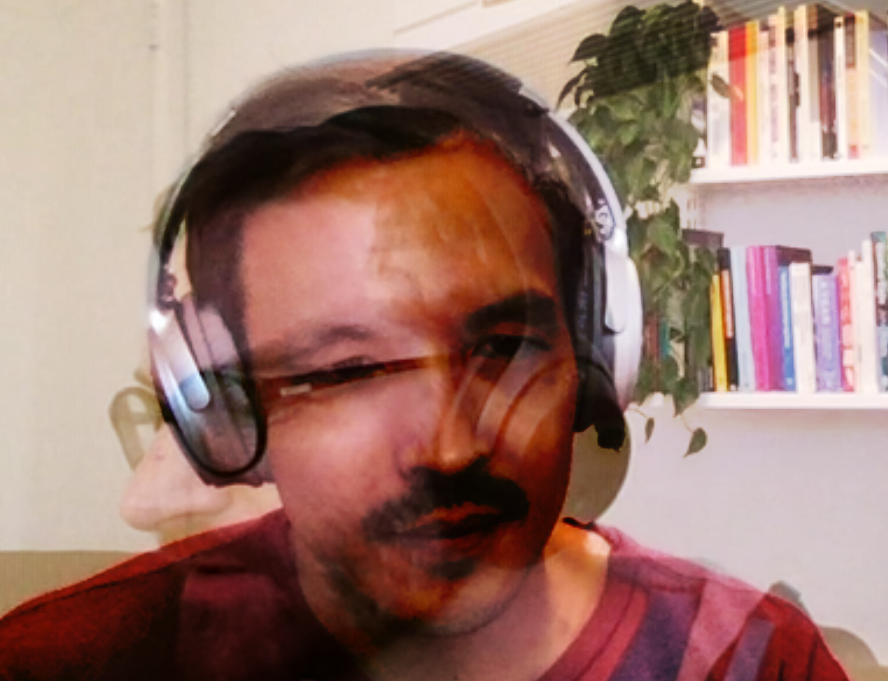

Intimacy Chat

- Date: September 2020
- Role: Full Stack Developer
- Tools: Node.js, WebRTC, Socket.io, Bootstrap
- Team: Livia Foldes (Art Direction and UX Design)
Intimacy Chat is an art piece and online experience that overlays the video of two participants in a real time video call. This unique interaction, combined with textual prompts mirrored to both users, asks participants to probe the tactle and emotional experience of remote communication. Livia and I were especially interested in the social dynamics of video calls, and wanted to explore how changes to the structure of the UI might change the structure of a conversation. Video calling platforms have seen little variation since the speculative designs for remote communication proposed in the early 20th century. We call on participants to assess the way this structure is taken for granted and expore new ways of building intimate relationships online.
